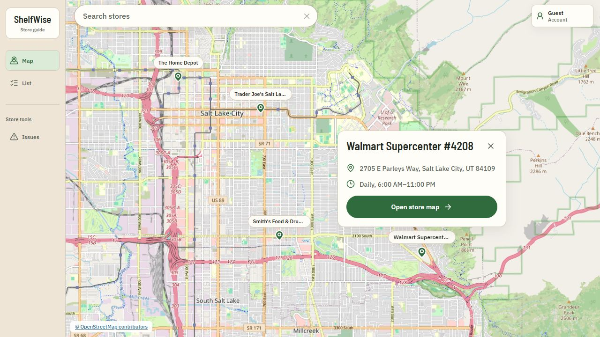

From a search
to the right shelf.
A quick guide to exploring a store in ShelfWise. Browse the map as a guest; sign in when you want to keep a shopping list.
Follow along in the app
01 / 05
Start with your store.
Open ShelfWise and use Search stores to find a location. Select its map pin to see the store’s details, then choose Open store map.
The quick version.
- Choose a store. Search for a location on the opening Map screen, select its pin, and choose Open store map.
- Explore the layout. Read the department labels, drag the map, and use the zoom or fit controls. Use the floor selector if the store has multiple floors.
- Find a product. Enter a name in Search products, groups, or regions, or open Products to browse the store’s catalog.
- Follow the result. Select a matching product to show its location on the map. Select its marker to explore the information available for that item.
- Keep a shopping list. Use Guest Account to sign in or create an account, then open List. Lists are associated with your account and kept separately for each store map.
A few useful things to know.
Do I need an account or an app download?
You can open the deployed web app in a browser and explore store maps as a guest. The shopping-list feature asks you to sign in. No desktop installer or mobile package is required for the web version linked here.
What if I cannot find a product or a store?
Check the spelling and try a shorter search. Make sure the right store and floor are open, or use Products to browse the catalog. A missing result does not confirm that a physical store is out of stock; it may mean the item or location has not been added to that map.
How current is the information?
The map displays a layout-update timestamp. Product details depend on the information maintained for that store, so availability and pricing can change. Check the information shown in the app and ask store staff when you need confirmation.
How do employees and managers use ShelfWise?
The project is designed around role-based updates: managers create and organize layouts, while employees maintain product information and store organization. Editing tools depend on the permissions assigned to an account. This public tutorial demonstrates the guest shopping workflow; administrative access is not required.
Your turn to explore.
Open the map and try finding a product in a store.